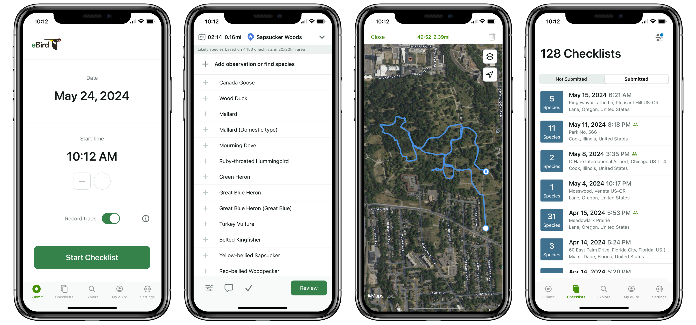
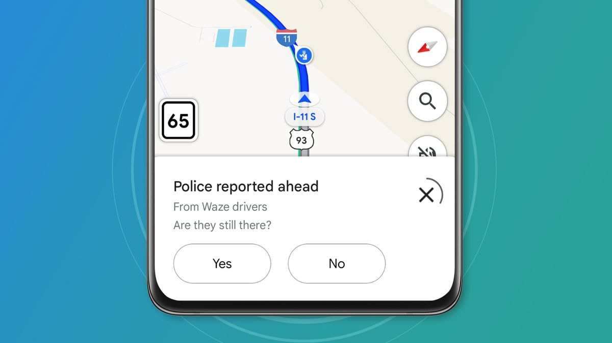

As a newcomer to Vancouver, I wanted to see Stanley Park's wildlife but was never there at the right time
After moving to Vancouver, I kept seeing people post incredible photos of Great Blue Herons, Great Horned Owls, and even Orca sightings right in the city. Every time I visited Stanley Park hoping to see something, I'd leave empty handed. I also noticed just how many people in Vancouver are passionate about birdwatching and wildlife spotting. It made me wonder why there wasn't an app that could tell you where the animals actually were right now, so that you could show up at the right place at the right time.
ResearchCompetitive Analysis
I conducted a competitive audit to understand what already existed and where the gaps were, looking both within the nature app category and outside it for inspiration.
Existing Apps for Expert Bird Watchers
eBird is one of the most popular apps among experienced birders, allowing users to log bird sightings and contribute data used for conservation and population research. The platform is primarily focused on personal checklist tracking and self-recorded sightings, where users document wildlife they discover on their own.

Product Gap
While eBird focuses on static checklists for data collection, it lacks any community-based or real-time functionality for exploring the park.
Looking Outside the Industry: Waze Real-Time Traffic Notifications
Waze is a popular GPS navigation app that uses proximity-based, real-time notifications to alert drivers about nearby hazards, police, and traffic conditions based on their immediate location. Community confirmations also help validate quickly changing situations in real time.
I wondered if there was an opportunity to apply Waze's real-time, community-driven notification system to wildlife discovery, helping users find nearby sightings while they are still active and relevant.
Key Insight
Wildlife spotting and traffic conditions are more alike than you may think. Both situations can change unpredictably and updates only matter if you're nearby.

Waze app community verification notification
SolutionIntroducing Wilds: Your Pocket Guide to Stanley Park's Wildlife in Real Time
Inspired by real-time community notifications, I designed Wilds to bring people together through a shared love of wildlife spotting, turning a solo walk through Stanley Park into something that feels more like a live, collaborative game.
Workflow 01: Nearby Spotting Notification in Real Time
Wildlife location is constantly changing, so what was accurate yesterday may not be the same today. Through proximity-based notifications, users can see which animals have been spotted recently as pins on the map. Selecting a pin surfaces the species, how recently it was spotted, and a route to get there. Once they arrive, users can confirm whether the animal is still there. If it's gone, the pin disappears from the map, keeping the data accurate for everyone nearby.


Key Insight
Community validation does two things at once — it keeps users engaged by making them feel like an active part of the experience, and it keeps the map accurate so the next person can trust what they see.
Workflow 02: Log a Sighting
Logging a sighting had to be fast enough to do before the animal moves on, and fun enough that people actually want to. Users tap to select the animal they spotted, add a photo if they have one, and drop a pin on the map for nearby users to see in real time. The whole flow takes seconds, making the experience feel dynamic and rewarding rather than like filling out a form.

More Questions than Answers
Wilds started from a personal experience turned into a genuine design solution. This project has been a great experience using Claude to go from vision to tangible prototype rapidly and continuously iterate on user flows and interactions.
Building it also surfaced how many hard technical questions sit underneath a deceptively simple idea. If this were to become a real app, there are questions I would need to work through closely with developers: How close does a user need to be to receive a notification? How long should a pin persist on the map before it becomes stale? How do you distinguish between the same animal spotted twice versus two different animals of the same species? Every answer opens up a new layer of complexity. That's what I find most interesting about this kind of work, designing a solution doesn't close the loop, it just helps you ask better questions.